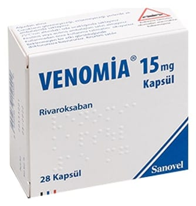

Venomia 15 mg Kapsül, 28 Adet

Ne için kullanılır
KT · Bölüm 1• VENOMİA kapsüllerin her biri 15 mg etkin madde (rivaroksaban) içerir. VENOMİA laktoz (sığır kaynaklı laktoz) içermektedir. Rivaroksaban pıhtılaşmayı önleyici ilaçlar olarak adlandırılan bir ilaç grubuna dahildir ve etkisini kanın pıhtılaşmasında rol oynayan faktör Xa’yı engelleyerek ve böylece kanın pıhtı oluşturma eğilimini azaltarak gösterir.
• VENOMİA 28 kapsüllük ambalajlarda sunulmaktadır. Ambalajın içindeki kapsüller beyaz renkte toz içeren, kapak ve gövde kısmı opak sarı renkte ‘‘3’’ numara HPMC kapsüller şeklindedir.
• VENOMİA yetişkin hastalarda aşağıdaki durumlarda kullanılmaktadır: − Bir tür kalp ritim bozukluğunda (non-valvülar atriyal fibrilasyon), beyin (inme) veya vücudun diğer damarlarındaki kan pıhtısının önlenmesinde, − Bacak damarlarındaki kan pıhtısının (derin ven trombozu) tedavisi ve akciğer damarlarında kan pıhtısının (pulmoner emboli) tedavisi ve bacak damarlarında ve akciğer damarlarında kan pıhtısının tekrar oluşmasının önlenmesinde. • VENOMİA, 18 yaşın altındaki ve vücut ağırlığı 30 kg’dan daha fazla olan çocuklarda ve ergenlerde aşağıdaki durumlarda kullanılır: − Kan pıhtılarını tedavi etmek için kullanılan enjektabl ilaçlarla en az 5 günlük başlangıç tedavisini takiben, kan pıhtılarının tedavisinde ve damarlarda veya akciğerlerdeki kan damarlarında kan pıhtılarının tekrar oluşmasının önlenmesinde.